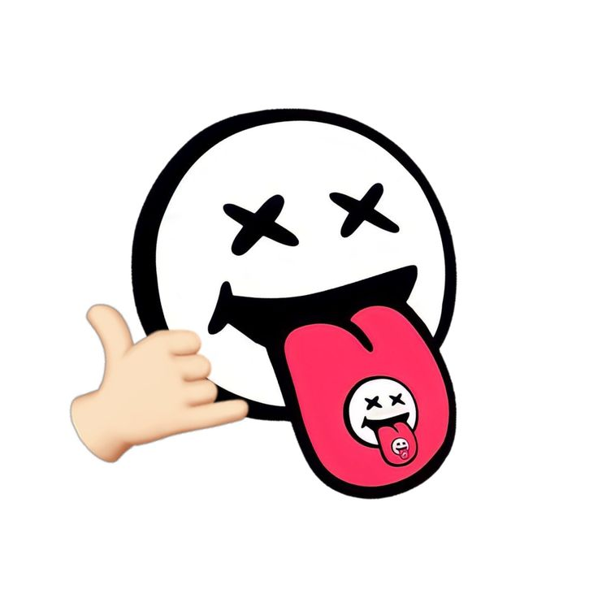

Special Message

Untuk Temanku Dibandung 🤍
Baca sampai selesai ya, Za!
Hai Za... Klik tombol di bawah ini kalau Lu lagi butuh sedikit suntikan semangat hari ini ya. ✨
Dibuat kebetulan penuh niat khusus buat lu • Buka di VS Code & Browser